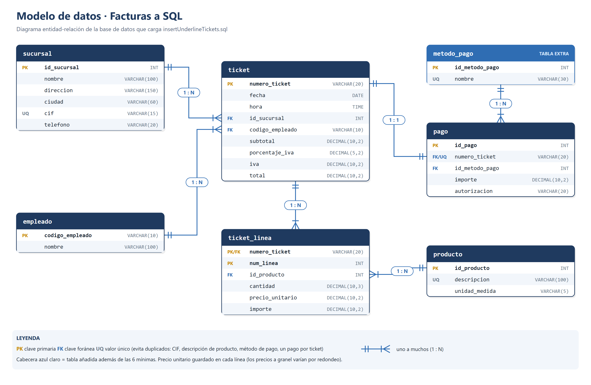

El objetivo es automatizar la carga de 20 tickets de supermercado en una base de datos relacional. El script
build_insert_from_tickets.py lee todos los .txt de una carpeta, extrae sus datos (tienda,
fecha, cajero, número de ticket, productos, subtotal, IVA, total y forma de pago), los valida y genera
insertUnderlineTickets.sql, un script listo para importar en un gestor de bases de datos. Sin insertar dos veces el mismo cajero ni el mismo producto,
y dejando en un log las facturas que no se han podido procesar y el motivo.
python build_insert_from_tickets.py facturas/-o archivo SQL de salida · --log archivo de log ·
--estricto no generar el SQL si hay errores · --solo-inserts sin CREATE TABLE.
Requiere Python 3.10 o superior; solo usa la biblioteca estándar.| Archivo | Contenido |
|---|---|
facturas/ | Las 20 facturas originales (factura_001.txt … factura_020.txt). |
build_insert_from_tickets.py | Script en Python (solo biblioteca estándar, sin dependencias externas). |
insertUnderlineTickets.sql | Script generado: CREATE TABLE + INSERT de las 7 tablas dentro de una transacción. |
errores_tickets.log | Log de facturas no procesadas y su motivo (extra para el 10). |
diagrama/diagrama_bd.png / .pdf | Diagrama entidad-relación del modelo. |
pruebas_errores/ | Las 20 facturas + 8 de prueba (7 con errores provocados y 1 con un producto escrito en mayúsculas), para demostrar las validaciones. |
Analizando los tickets se identifican las entidades que se repiten entre facturas (tienda, cajero, producto, forma de pago) y las que son propias de cada factura (cabecera, líneas y pago). Las primeras se separan en tablas de catálogo para no guardar el mismo dato varias veces (normalización), y las segundas las referencian mediante claves foráneas.

| Tabla | Clave | Decisión de diseño |
|---|---|---|
| sucursal | PK id_sucursal · UQ cif | Datos de la cabecera del ticket. El CIF identifica la tienda y es único; la dirección se separa en dirección y ciudad. |
| empleado | PK codigo_empleado | Se usa el código del cajero que ya trae el ticket (clave natural), así no puede repetirse. |
| producto | PK id_producto · UQ descripcion | Catálogo sin descripciones repetidas. unidad_medida distingue productos a granel (kg) de unidades. |
| ticket | PK numero_ticket · FK sucursal, empleado | Cabecera: fecha, hora, subtotal, % de IVA, IVA y total. |
| ticket_linea | PK (numero_ticket, num_linea) · FK producto | Una fila por producto comprado. Guarda cantidad (DECIMAL(10,3) por los kg), precio unitario e importe.
El precio va en la línea y no en el producto porque puede cambiar entre tickets (en los productos a granel varía un céntimo por redondeo). |
| pago | PK id_pago · UQ numero_ticket | Importe pagado y nº de autorización (solo con tarjeta; NULL en efectivo). Relación 1:1 con ticket. |
| metodo_pago (extra) | PK id_metodo_pago · UQ nombre | Tabla añadida: TARJETA / EFECTIVO se guardan una sola vez en lugar de repetirse como texto en cada pago. |
Antes de programar se tradujo una factura a mano para entender qué dato va a cada tabla. Ejemplo con factura_002.txt:
SUPERMERCADOS EL AHORRO
Av. Principal #123 - Madrid
CIF: B12345678 Tel: 910123456
------------------------------------------------
Fecha: 12/09/2025 Hora: 18:26
Cajero: 033 - Laura García
Ticket: 20010002
------------------------------------------------
CANT DESCRIPCIÓN IMPORTE
------------------------------------------------
0.500 Manzana Golden (kg) 0.62 €
1 Pechuga de Pollo (kg) 6.20 €
2 Sal Fina 1kg 1.00 €
1.250 Cebolla (kg) 1.38 €
1 Huevos Camperos 12u 3.10 €
1.500 Pimiento Rojo (kg) 3.60 €
2 Queso Manchego 250g 8.40 €
1 Café Molido 250g 3.80 €
------------------------------------------------
SUBTOTAL 28.10 €
IVA (21%) 5.90 €
------------------------------------------------
TOTAL A PAGAR 34.00 €
------------------------------------------------
FORMA DE PAGO: EFECTIVO
------------------------------------------------
¡GRACIAS POR SU COMPRA!
Conserve su ticket para cambios
Cabecera: Fecha 12/09/2025 18:26, Cajero 033 - Laura García, Ticket 20010002.
Pago en EFECTIVO (sin autorización).
-- sucursal y metodo_pago: ya existen (id 1 y 2), no se repiten -- empleado 033 Laura García: se inserta solo la primera vez que aparece INSERT INTO empleado (codigo_empleado, nombre) VALUES ('033', 'Laura García'); -- ticket (cabecera) INSERT INTO ticket (numero_ticket, fecha, hora, id_sucursal, codigo_empleado, subtotal, porcentaje_iva, iva, total) VALUES ('20010002', '2025-09-12', '18:26:00', 1, '033', 28.10, 21, 5.90, 34.00); -- ticket_linea: una fila por producto (id_producto del catálogo, sin duplicar) INSERT INTO ticket_linea (numero_ticket, num_linea, id_producto, cantidad, precio_unitario, importe) VALUES ('20010002', 1, 6, 0.500, 1.24, 0.62), ('20010002', 2, 7, 1, 6.20, 6.20), ('20010002', 3, 5, 2, 0.50, 1.00), ('20010002', 4, 8, 1.250, 1.10, 1.38), ('20010002', 5, 9, 1, 3.10, 3.10), ('20010002', 6, 10, 1.500, 2.40, 3.60), ('20010002', 7, 11, 2, 4.20, 8.40), ('20010002', 8, 2, 1, 3.80, 3.80); -- pago INSERT INTO pago (id_pago, numero_ticket, id_metodo_pago, importe, autorizacion) VALUES (2, '20010002', 2, 34.00, NULL);
El precio unitario no viene en el ticket: se calcula como importe ÷ cantidad (p. ej. 0.62 € ÷ 0.500 kg = 1.24 €/kg).
Cada factura se lee línea por línea. El programa lleva un estado que indica en qué parte del ticket está, y
cada raya separadora ------ lo hace avanzar a la sección siguiente:
CABECERA → DATOS → ENCABEZADO_LINEAS → LINEAS → TOTALES → PAGO → PIE
En cada estado solo se aceptan las líneas que tocan, reconocidas con expresiones regulares
(p. ej. ^Cajero:\s*(?P<codigo>\d+)\s*-\s*(?P<nombre>.+)). Una línea inesperada se rechaza
indicando su número. La cantidad de cada producto se captura como texto para poder comprobar después si es numérica y dar un mensaje claro.
La clase Catalogo acumula las entidades únicas usando diccionarios: cajeros por código, productos por
descripción normalizada (sin distinguir mayúsculas ni espacios), sucursales por CIF y tickets por número. Si un dato ya
existe se reutiliza su id en lugar de insertarlo otra vez. Una factura con errores se rechaza entera
(no se carga nada de ella) y el programa continúa con las demás.
Se escriben primero los CREATE TABLE y después los INSERT en orden de dependencias
(primero las tablas referenciadas). Para optimizar, cada tabla usa un único INSERT con varias filas y todo va dentro
de BEGIN; … COMMIT;. Los textos se escapan (' → '') y los importes usan
Decimal para evitar errores de redondeo de los float.
| Función | Qué hace |
|---|---|
| main() | Lee los argumentos (carpeta, -o, --log, --estricto, --solo-inserts) y controla los errores fatales. |
| generar_sql_para_carpeta() | Proceso completo: procesa la carpeta, escribe el .sql y el log, muestra el resumen y devuelve el código de salida. |
| procesar_carpeta() | Recorre los .txt en orden, llama a parse_ticket() y al catálogo, y separa facturas válidas y rechazadas. |
| parse_ticket() | Máquina de estados que extrae los datos de una factura. |
| validar_ticket() | Comprueba que no falten datos y que los importes cuadren. |
| Catalogo.comprobar_conflictos() / agregar() | Detecta duplicados contra lo ya cargado y registra las entidades nuevas sin repetir. |
| generar_sql() / insert_multifila() | Construyen el texto del script SQL. |
| escribir_log() | Escribe el log con las facturas rechazadas, los avisos y los duplicados evitados. |
| Validación | Cómo se detecta | Resultado |
|---|---|---|
| Archivo vacío | Ninguna línea con contenido. | Se rechaza: «archivo vacío». |
| Formato incorrecto | Línea no reconocida en su sección, o faltan datos obligatorios (fecha, cajero, nº ticket, totales, forma de pago, líneas). | Se rechaza indicando la línea o los datos que faltan. |
| Cantidad no numérica | La cantidad no cumple ^\d+([.,]\d+)?$ o es ≤ 0. | Se rechaza: «la cantidad 'tres' del producto … no es numérica». |
| Cajero repetido | Diccionario por código. Mismo código y nombre → se reutiliza. Mismo código con otro nombre → conflicto. | Sin duplicados en empleado; el conflicto se rechaza. |
| Producto duplicado | Descripción normalizada (minúsculas y espacios): «CAFÉ MOLIDO 250G» = «Café Molido 250g». | Se reutiliza el id_producto existente. |
| Ticket repetido | Número de ticket ya cargado. | Se rechaza indicando en qué archivo estaba. |
| Importes que no cuadran | Suma de líneas ≠ subtotal, IVA ≠ % del subtotal o subtotal + IVA ≠ total (tolerancia 0.01 €). | Se rechaza mostrando ambos valores. |
| Fecha imposible | datetime.strptime falla (p. ej. 31/02/2025). | Se rechaza indicando la línea. |
--estricto, si hay cualquier error no se genera el SQL.
Códigos de salida: 0 todo correcto · 1 hubo facturas rechazadas · 2 no se generó el SQL.PS C:\Users\saray\EXAMEN_PYTHON_FACTURAS> python build_insert_from_tickets.py facturas/ Facturas leídas: 20 | procesadas: 20 | rechazadas: 0 SQL generado: insertUnderlineTickets.sql (20 tickets, 7 empleados, 20 productos) Log: errores_tickets.log PS C:\Users\saray\EXAMEN_PYTHON_FACTURAS> $LASTEXITCODE 0
PS C:\Users\saray\EXAMEN_PYTHON_FACTURAS> python build_insert_from_tickets.py pruebas_errores/ -o pruebas_errores/salida_pruebas.sql --log pruebas_errores/salida_pruebas.log Facturas leídas: 28 | procesadas: 21 | rechazadas: 7 [ERROR] factura_901_error_vacio.txt: archivo vacío [ERROR] factura_902_error_cantidad_no_numerica.txt: línea 16: la cantidad 'tres' del producto 'Sal Fina 1kg' no es numérica [ERROR] factura_903_error_falta_total.txt: formato incorrecto, faltan datos: TOTAL A PAGAR [ERROR] factura_904_error_ticket_repetido.txt: número de ticket 20010007 repetido (ya está en factura_007.txt) [ERROR] factura_905_error_cajero_repetido_otro_nombre.txt: código de cajero 015 repetido con otro nombre: 'Pedro Sánchez' (ya registrado como 'Juan Pérez') [ERROR] factura_906_error_importes_no_cuadran.txt: la suma de las líneas (25.42) no coincide con el SUBTOTAL (29.99) [ERROR] factura_908_error_fecha_imposible.txt: línea 6: fecha u hora imposible '31/02/2025 17:01' SQL generado: pruebas_errores\salida_pruebas.sql (21 tickets, 7 empleados, 20 productos) Log: pruebas_errores\salida_pruebas.log PS C:\Users\saray\EXAMEN_PYTHON_FACTURAS> $LASTEXITCODE 1
La factura factura_907_ok_producto_en_mayusculas.txt sí se procesa: su producto «CAFÉ MOLIDO 250G»
se reconoce como el ya existente y el catálogo sigue teniendo 20 productos.
====================================================================== LOG DE PROCESAMIENTO DE FACTURAS - 19/11/2026 17:39:59 Carpeta: C:\Users\saray\EXAMEN_PYTHON_FACTURAS\pruebas_errores ====================================================================== Facturas leídas: 28 Facturas procesadas: 21 Facturas rechazadas: 7 SQL generado: sí FACTURAS NO PROCESADAS ---------------------------------------------------------------------- [ERROR] factura_901_error_vacio.txt: archivo vacío [ERROR] factura_902_error_cantidad_no_numerica.txt: línea 16: la cantidad 'tres' del producto 'Sal Fina 1kg' no es numérica [ERROR] factura_903_error_falta_total.txt: formato incorrecto, faltan datos: TOTAL A PAGAR [ERROR] factura_904_error_ticket_repetido.txt: número de ticket 20010007 repetido (ya está en factura_007.txt) [ERROR] factura_905_error_cajero_repetido_otro_nombre.txt: código de cajero 015 repetido con otro nombre: 'Pedro Sánchez' (ya registrado como 'Juan Pérez') [ERROR] factura_906_error_importes_no_cuadran.txt: la suma de las líneas (25.42) no coincide con el SUBTOTAL (29.99) [ERROR] factura_908_error_fecha_imposible.txt: línea 6: fecha u hora imposible '31/02/2025 17:01' AVISOS ---------------------------------------------------------------------- (ninguno) DUPLICADOS EVITADOS (reutilizados en vez de insertarse otra vez) ---------------------------------------------------------------------- Empleados: 14 | Productos: 143 | Sucursales: 20
-- ===================================================================== -- insertUnderlineTickets.sql -- Generado por build_insert_from_tickets.py el 19/11/2026 17:39:58 -- Tickets: 20 | Empleados: 7 | Productos: 20 | Sucursales: 1 -- ===================================================================== -- (...) DROP TABLE / CREATE TABLE de las 7 tablas (...) CREATE TABLE ticket ( numero_ticket VARCHAR(20) PRIMARY KEY, fecha DATE NOT NULL, hora TIME NOT NULL, id_sucursal INT NOT NULL, codigo_empleado VARCHAR(10) NOT NULL, subtotal DECIMAL(10,2) NOT NULL, porcentaje_iva DECIMAL(5,2) NOT NULL, iva DECIMAL(10,2) NOT NULL, total DECIMAL(10,2) NOT NULL, FOREIGN KEY (id_sucursal) REFERENCES sucursal (id_sucursal), FOREIGN KEY (codigo_empleado) REFERENCES empleado (codigo_empleado) ); -- (...) BEGIN; -- Sucursales INSERT INTO sucursal (id_sucursal, nombre, direccion, ciudad, cif, telefono) VALUES (1, 'SUPERMERCADOS EL AHORRO', 'Av. Principal #123', 'Madrid', 'B12345678', '910123456'); -- Empleados (cajeros, sin repetir) INSERT INTO empleado (codigo_empleado, nombre) VALUES ('011', 'Carlos Ruiz'), ('015', 'Juan Pérez'), ('019', 'Sofía Martínez'), -- (... 4 filas más ...) -- Productos (catálogo, sin repetir descripciones) INSERT INTO producto (id_producto, descripcion, unidad_medida) VALUES (1, 'Pasta Spaghetti 500g', 'ud'), (2, 'Café Molido 250g', 'ud'), (3, 'Arroz Redondo 1kg', 'ud'), -- (... 17 filas más ...) -- Métodos de pago INSERT INTO metodo_pago (id_metodo_pago, nombre) VALUES (1, 'TARJETA'), (2, 'EFECTIVO'); -- Tickets (cabecera) INSERT INTO ticket (numero_ticket, fecha, hora, id_sucursal, codigo_empleado, subtotal, porcentaje_iva, iva, total) VALUES ('20010001', '2025-09-11', '17:01:00', 1, '015', 25.42, 21, 5.34, 30.76), ('20010002', '2025-09-12', '18:26:00', 1, '033', 28.10, 21, 5.90, 34.00), ('20010003', '2025-09-13', '10:15:00', 1, '011', 22.30, 21, 4.68, 26.98), -- (... 17 filas más ...) -- Líneas de ticket INSERT INTO ticket_linea (numero_ticket, num_linea, id_producto, cantidad, precio_unitario, importe) VALUES ('20010001', 1, 1, 2, 0.85, 1.70), ('20010001', 2, 2, 1, 3.80, 3.80), ('20010001', 3, 3, 2, 1.15, 2.30), -- (... 154 filas más ...) -- Pagos INSERT INTO pago (id_pago, numero_ticket, id_metodo_pago, importe, autorizacion) VALUES (1, '20010001', 1, 30.76, '741486'), (2, '20010002', 2, 34.00, NULL), (3, '20010003', 2, 26.98, NULL), -- (... 17 filas más ...) COMMIT;
El script se ha importado en SQLite con las claves foráneas activadas: se cargan 1 sucursal, 7 empleados, 20 productos, 2 métodos de pago, 20 tickets, 157 líneas y 20 pagos, sin ninguna violación de integridad. Las sentencias usan SQL estándar (compatible con MySQL/MariaDB, PostgreSQL y SQLite).